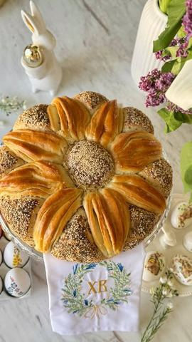

Moja beleška
SačuvanoMekana, mirisna i dekorativna – ova pogača će sigurno ulepšati vaš praznični sto. Priprema nije komplikovana, a rezultat je i lep i ukusan – baš onako kako volimo za Uskrs. U nastavku vas čeka recept korak po korak.
Sastojci
- Potrebni sastojci
Priprema
1. Pomešajte kvasac, šećer i mleko. Ostavite 10 minuta da se aktivira. 2. U brašno dodajte so, promešajte, pa dodajte aktivirani kvasac, vodu i 50ml ulja. Mešajte i umesite glatko testo. 3. Pred kraj dodajte još 20ml ulja i njime premažite testo da se ne lepi. 4. Oblikujte u loptu, pokrijte krpom i ostavite da naraste 30–60 minuta. Formiranje pogače: 5. Odvojite manji deo testa za kuglicu koja ide u sredinu. 6. Ostatak podelite na dva dela. Prvi deo podelite na 8 jednakih kuglica. Svaku umačite u ostatak umućenog jaja sa mlekom, zatim u susam i lan, i poređajte po ivici okruglog pleha. 7. Drugi deo podelite na tri loptice. Svaku razvucite u krug oko 20 cm. Prvu i drugu premažite omekšalim maslacem, treću ostavite bez premaza. Složite ih jednu na drugu i sve zajedno blago razvucite. 8. Isecite na osam trouglova i svaki po sredini pritisnite štapićem da dobijete oblik latica. Poređajte ih između kuglica. 9. U sredinu stavite malu kuglicu od testa, takođe premazanu i posutu po želji. Pečenje: 10. Pogaču pokrijte krpom i ostavite još 30 minuta da naraste. 11. Premažite ostatkom umućenog jaja sa mlekom. 12. Pecite u prethodno zagrejanoj rerni na 200°C oko 25 minuta. 13. Po želji, pred kraj stavite papir za pečenje odozgo da ne prepeče. 14. Kad se ispeče, premažite maslacem i ostavite da se hladi. @domaci_recepti i hvala za ovako jednostavnu, prelepu i preukusnu pogaču 🥰 Ako isprobate, obavezno mi javite kako je ispalo – jedva čekam da vidim vaše verzije! Srećni praznici! ❤️
Originalni opis sa Instagrama
Uskršnja cvet pogača 🪺🌼 Mekana, mirisna i dekorativna – ova pogača će sigurno ulepšati vaš praznični sto. Priprema nije komplikovana, a rezultat je i lep i ukusan – baš onako kako volimo za Uskrs. U nastavku vas čeka recept korak po korak. Potrebni sastojci: • 30g svežeg ili 1 suvi kvasac • 1 kašika šećera • 200ml toplog mleka • 800g brašna + malo za doradu • 1 puna kašika soli • 50ml ulja + 20ml dodatno • 300ml mlake vode • 50g maslaca • 1 jaje • 1 kašika mleka • susam i lan za posipanje Priprema: 1. Pomešajte kvasac, šećer i mleko. Ostavite 10 minuta da se aktivira. 2. U brašno dodajte so, promešajte, pa dodajte aktivirani kvasac, vodu i 50ml ulja. Mešajte i umesite glatko testo. 3. Pred kraj dodajte još 20ml ulja i njime premažite testo da se ne lepi. 4. Oblikujte u loptu, pokrijte krpom i ostavite da naraste 30–60 minuta. Formiranje pogače: 5. Odvojite manji deo testa za kuglicu koja ide u sredinu. 6. Ostatak podelite na dva dela. Prvi deo podelite na 8 jednakih kuglica. Svaku umačite u ostatak umućenog jaja sa mlekom, zatim u susam i lan, i poređajte po ivici okruglog pleha. 7. Drugi deo podelite na tri loptice. Svaku razvucite u krug oko 20 cm. Prvu i drugu premažite omekšalim maslacem, treću ostavite bez premaza. Složite ih jednu na drugu i sve zajedno blago razvucite. 8. Isecite na osam trouglova i svaki po sredini pritisnite štapićem da dobijete oblik latica. Poređajte ih između kuglica. 9. U sredinu stavite malu kuglicu od testa, takođe premazanu i posutu po želji. Pečenje: 10. Pogaču pokrijte krpom i ostavite još 30 minuta da naraste. 11. Premažite ostatkom umućenog jaja sa mlekom. 12. Pecite u prethodno zagrejanoj rerni na 200°C oko 25 minuta. 13. Po želji, pred kraj stavite papir za pečenje odozgo da ne prepeče. 14. Kad se ispeče, premažite maslacem i ostavite da se hladi. @domaci_recepti i hvala za ovako jednostavnu, prelepu i preukusnu pogaču 🥰 Ako isprobate, obavezno mi javite kako je ispalo – jedva čekam da vidim vaše verzije! Srećni praznici! ❤️ #uskršnjapogača #cvetpogača #recept #uskršnirecept #ukusnirecepti #ukusnahrana